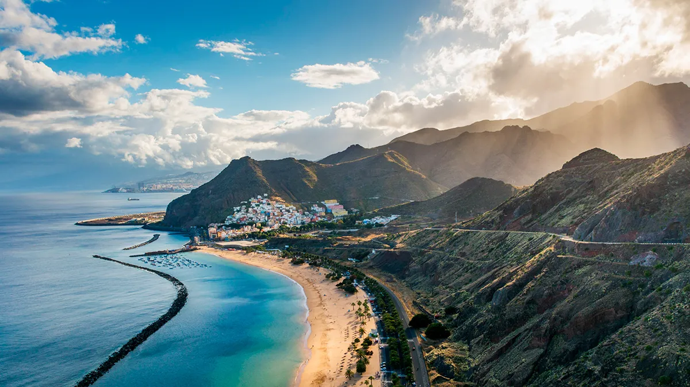

Тенерифе
Тенерифе — самый большой из Канарских островов, его площадь составляет 2045 км², а население — 700 тыс. человек. Туристов здесь ждут многочисленные достопримечательности, развлечения, интересные города. Остров делится на южное побережье с сухим климатом и золотистыми пляжами и более влажное и ветреное северное побережье, чьи черные пески под крутыми скалами напоминают о вулканическом происхождении Тенерифе. Между ними на высоту 3718 м вознесся самый высокий пик Испании — гора Тейде.
